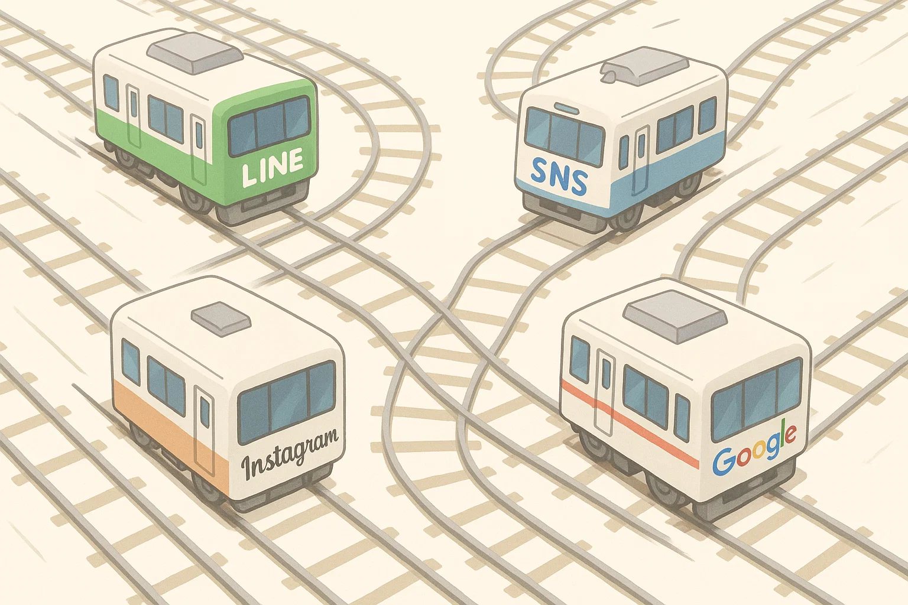

私たちのゴールは
お客様に“来店”して
いただくことです。
どれだけ話題になっても、いいねが増えても、
最終的に“来店”につながらなければ
意味がありませんよね？
その電車、本当にお客様を
“来店”まで運んでいますか？
- 『Google』
- 『LINE』
- 『Instagram』
- 『SNS』
- 『ホームページ』
LINEもクーポンを
発行するだけで終わっていませんか？
SNSをただ投稿して
終わりにしてませんか？
それぞれがパワフルな電車 (媒体) でも、
別々の線路でバラバラに走っている限り、
お客様を「来店」というゴールへ真っすぐ運ぶことは難しいですよね。
電車に例えると…
全媒体をつなげて
“最短ルート”でお客様を来店へ
大切なのは
すべてをつなげること
各媒体を連動させて、離脱させない！
そして、しっかり“来店”へと導く
導線設計が集客のカギです。
そのための
動線設計です！
サービス内容
Google関係の運用サポート
- 各店舗に適したローカルキーワードの調査・設計
- Googleビジネスプロフィールの初期設定と最適化
- 週2~3回の投稿 (AI検索に拾われやすい文脈設計)重要！
- 口コミ返信対応 (星の数ごとに最適なテンプレ設計/SEO・AIO対応)
SNS初期設計+運用サポート
- Instagramアカウントの初期設定 (プロフィール文・リンク導線整備)
- Instagram投稿アドバイス付き (簡易運用マニュアル+投稿添削可)
追加マーケットサポート
- トリップアドバイザーへのインバウンド用初期設定
- ダーツライブショップページのなどの業界独自サイトの最適化（ご相談ください）
おまけ
- 4,300人以上の生のフォロワーに抱えるアカウントで店舗の運用方法を引用投稿！
リンク付きで投稿するので店舗の露出も増え各サイトへの流入が増えます。
契約期間
1店舗あたり
月々のサービス料金
初期費用
6ヶ月プラン
33,000円 / 税込
1年間プラン
30,000円 / 税込
複数店舗でのご契約をご検討いただける場合は、全体のご負担を抑えられるよう契約条件、金額について“かなり”柔軟に調整させていただきます。
すべての施策は『来店までの導線』を整理しAIにも拾われやすい状態をつくり来店につなげることをゴールにしています。
今回ご紹介した以外にも状況に応じてお手伝いできることがまだありますので、お気軽にご相談ください。
よくある質問
- Q1: 来店導線デザイナーって何をしてくれるの？
- A1: 「お客様が来たくなる仕組み」を作る専門家です。来店までのハードルを下げて、新規のお客様を集める導線や仕組みを丸ごと設計し、サポートします。
- Q2: どんな悩みを相談できる？
- A2: 「もっとお客様を呼びたい」「SNSやGoogleから来店につなげたい」「店の入り口が目立たない…」など、集客・導線・レイアウト・予約・キャンペーンまで幅広くご相談ください！
- Q3: 普通のコンサルと何が違うの？
- A3: 実店舗の現場で、お客様の「行きたい！」をつくる導線をSNSやGoogleで実践してきたからこそ、数字だけじゃなく“お客様の心が動く瞬間”を大切に提案します。Googleビジネスプロフィールや口コミ対策も得意です。
- Q4: Google対策って何をしてくれるの？
- A4: Googleビジネスプロフィールの最適化、投稿や写真・口コミ対策、マップ上で目立つ工夫など、お店の魅力がしっかり伝わり「見つけてもらえる」「選ばれる」仕組みづくりをサポートします。
- Q5: どんなお店でも頼める？
- A5: はい！カフェ・美容室・整体・小さなお店から大型店舗まで、業種も規模も問わずOKです。何でも一度ご相談ください。
- Q6: どんな流れで進むの？
- A6: まずヒアリングや現地チェック→課題発見→「今できること」から一緒に改善→実施サポート→効果の振り返り。GoogleやSNSも含めて気軽なやりとりで進めます！
Googleだけ！ SNSだけ！ ではなく
GoogleとSNSやLINE、ホームページなどを組み合わせて活用し
「来店につながる仕組みづくり」をつくります！
少しでも気になったら
元ダーツの日本代表
名前：石田 博生 Ishida Hiroo
あだ名：POPO
🔻 今すぐお問い合わせください 🔻